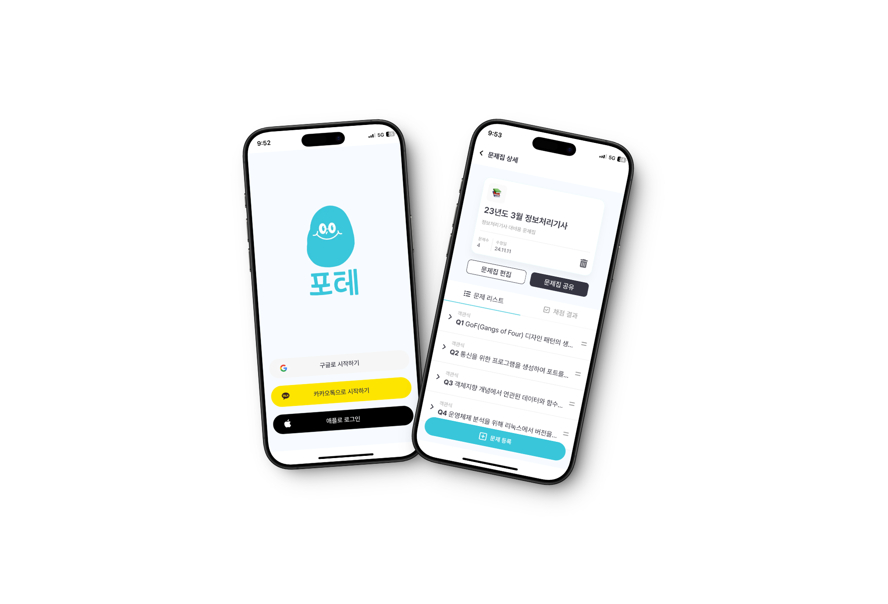

About Me

Learning By Coding, 강한 실행력을 가진 개발자
안녕하세요! 컴퓨터공학을 전공하고 있는 학생입니다 ☺️ 저는 코드 품질을 최우선 가치로 삼아 단위 테스트를 철저히 수행하고, 이를 통해 기능의 정확성과 안정성을 검증하는 백엔드 개발자입니다. 코드 작성만큼 문서화도 중요하게 여기며, 모든 개발 과정과 의사결정을 빠짐없이 기록하고 체계적으로 관리합니다. 또한, 더 나은 성능과 높은 완성도를 위해 새로운 기술을 배우고, 이를 실제 서비스에 적용하기 위해 끊임없이 도전하고 있습니다.
기술 스택
포트폴리오
